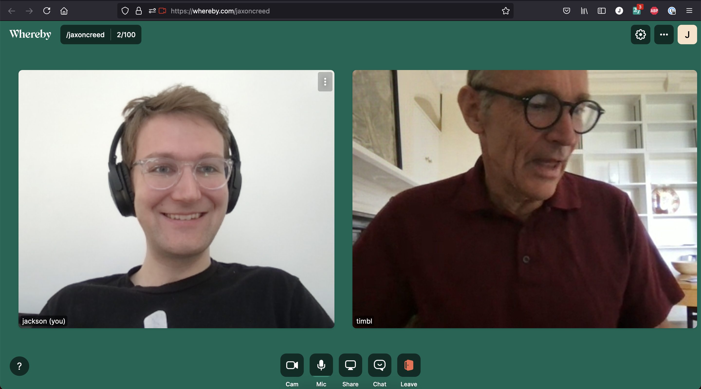
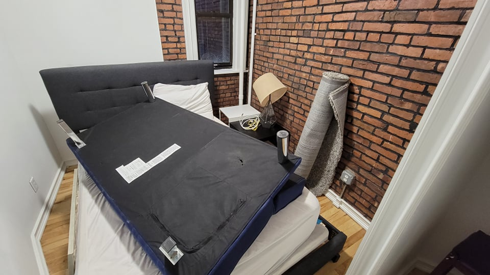
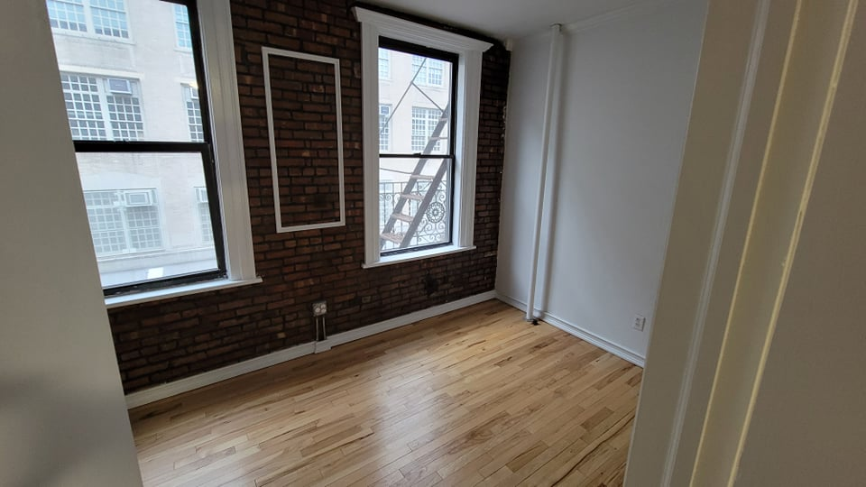
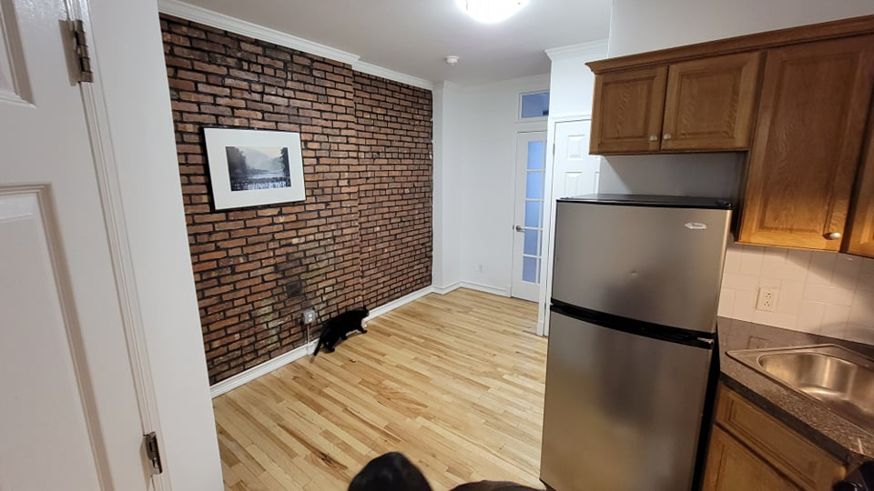
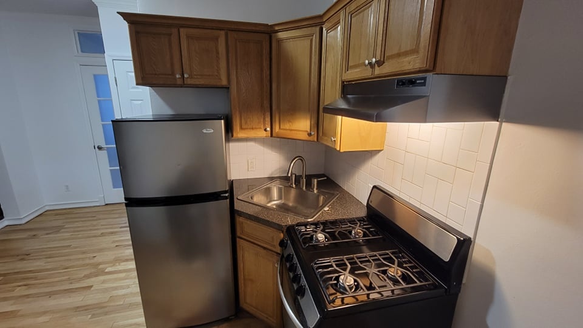
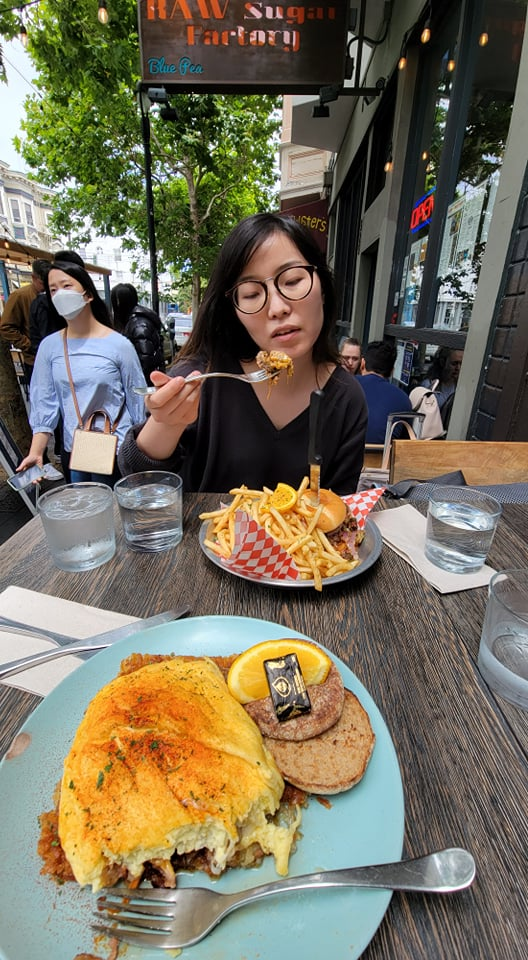
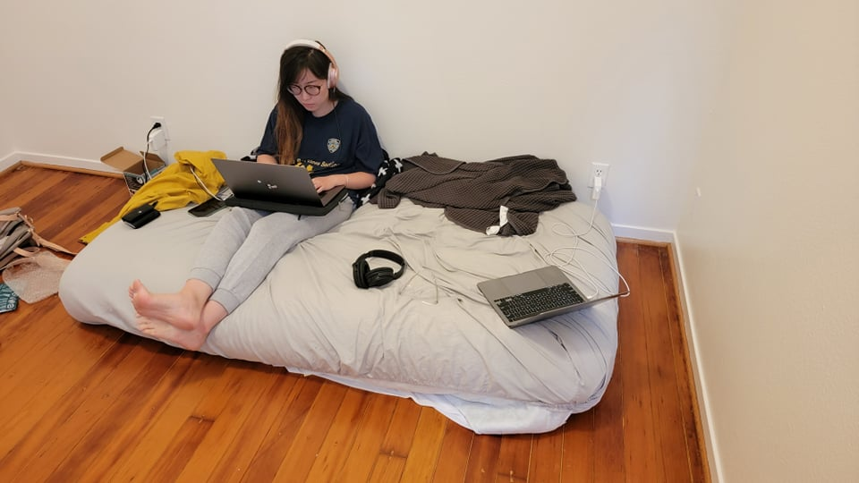
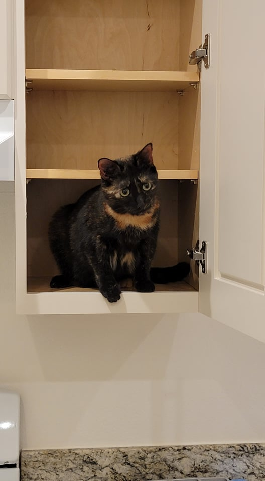

Sooooo much has happened and I
These four days have molded together for me, so I'm just going to address them all in one section.
On Wednesday, I had my bi-weekly one on one with Tim. We discussed a few things including the continued desire to have SolidOS upgraded to the new auth library. Apparently, I'm still the best person for that job. So, Tim said he'd circle back with Emmet to see if we can get funding on that. I also was there to experience the opening bid on Tim's NFT auction. He recently made news for posting the original code of the World Wide Web for auction as an NFT, and the auction happened to open while we were talking. The first bid was about twice my net worth, and I'm sure it'll go up from there! That just goes to show how success begets success. I don't have anything that valuable to auction off haha. Though, Ailin did suggest that I sell this screenshot of Tim getting the first bid on his NFT as an NFT hahaha!
After the meeting I hopped back onto building the ShexJ to Typescript converter. I don't remember what happened each day, but here's the progression of events: I started by finally completing basic functionality for some of the basic clauses in ShexJ objects, but I ran into a snag when I realized I needed to modify the traverser to handle cases when a ShexJ object has a string pointing to an object elsewhere in the schema. To accomplish this, I'd need to modify the ShexJ traverser to accept a "Context" object that I could pass children to.
So, I swapped back to the ShexJ Traverser, and I decided to clean up my code in the traverser a bit while I was added. There were a lot of things that could be simplified into a few sharable functions. For example, there are many types in the ShexJ definitions that are interfaces, and every interface traverser follows the same pattern, but I'd been copying and pasting code and modifying it for each interface. This makes it annoying to update how the traverser works because I'd need to update every interface. Writing common functions for interfaces was the right way to go.
While I was modifying the interfaces, I started playing around with TypeScript typings a bit more. Because this interface traverser didn't know the exact interface it would be traversing, I needed to set it up with generics, but that lead me down a rabit hole learning the more complex things that typescript could do.
Eventually, I got to the point where I was finding new things about TypeScript typings. And, yes, the typing system is turing complete. I found someone who wrote code to calculate if a number is prime just using the typing system. It became my obsession for the next couple of days, so much so that I acknoledged that this is some useless stuff for my ultimate goal. I expressed this concern to Ailin and she suggested that I could turn it into something productive by making a video about fancy types and posting it to YouTube. That's a great idea. So, I've been recording ideas for the video as I continue to develop this library.
The library itself has evolved from a simple ShexJ traverser to a generic traverser that can traverse any type definition. I'll validate the traversal configuration using some fancy Turing complete typescript.
Other than the typescript distraction, we sold most of our furniture and went around to have a final meal at some of our favorite restaurants in the Lower Eastside.
On Saturday, we did our final packing and cleaning, and for a reward, we finally went to a restaurant on Broome street. The entire time we lived there we kept talking about going to a place on Broome street and we haven't done it. And we still didn't do it because we messed up and books an appointment for something on Orchard street. It was good either way. We did consider going to a club that evening because we hadn't been to one in New York yet, but we decided to be lame and go to bed to get ready for the flight.
The big moving day had come. We started at 4am by doing a final pack of our bags and making our way out. I took a few photos of the apartment for nostalgic reasons before leaving.
   Then it was off to the airport where we had just enough time to get to our flight. Baggage check and security were quite slow to get through, so I'm glad we allotted two hours before takeoff.
Ailin and I were split up for the 5 hour 15 minute flight. I originally was planning on completing the next Chapter of Star Jump since I want to complete 2 chapters a month and I haven't done that yet, but instead I worked on fun with typescript typings all flight.
When we landed and got to our new apartment, the landlord wasn't there yet, so we had brunch at the restaurant next door. Once the landlord arrived we were able to see the apartment in person for the first time and it is huge (in comparison to our one in New York). Also, I really like the landlord. He seems very willing to help out when needed. We spent the rest of the day getting a few essentials from target (like an air mattress) and reaching out to people on Nextdoor and Facebook to get free furniture.
  Monday was all about picking up furniture, but before that I had a meeting with Philipp Schmidt, a leader in the Digital Credentials Consortium. We discussed my background and he seemed pretty keen on having me work on digital credentials stuff on contract. That's amazing but it would mean diverting away from Solid for a bit. I'd be working on the Universal Wallet Spec (I think I talked about it earlier. It was a spec that needs a lot of work). But, I'd still be excited to participate on that. I can see my work on the wallet turning into new, wider avenues. So, I can't wait to get started.
I'm not going to go into a lot of detail about the furniture pick up. It was easy sometimes and hard other times. Shopping at IKEA and getting desk chairs was easy. But, the only person who had a bed cancelled on us and we ended up picking up a couch that was too big to get into our apartment. Needless to say. It was a tiring day.